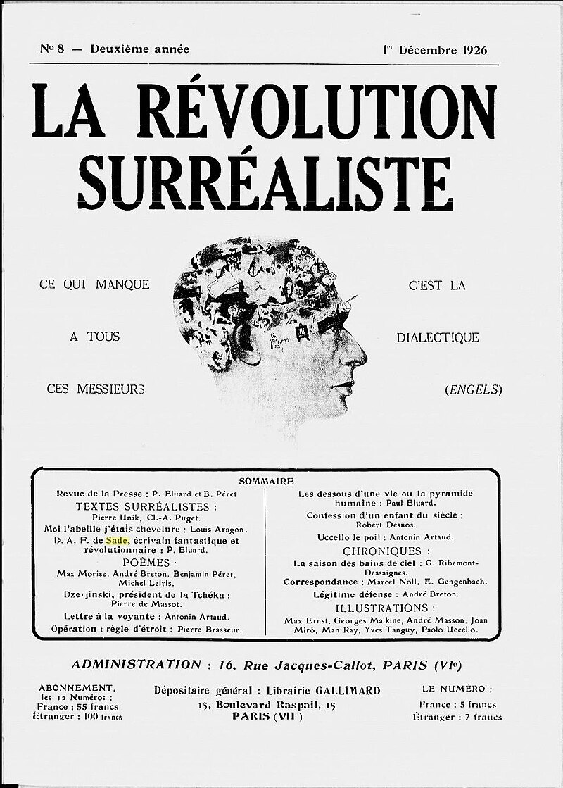
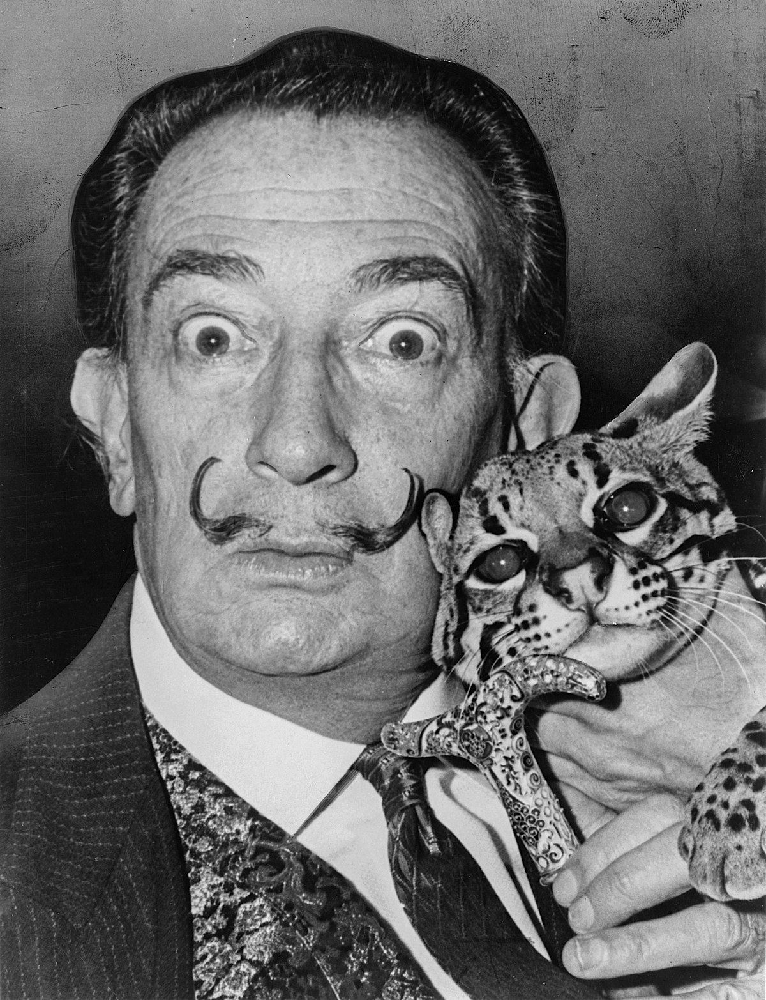

Surrealismo
Il sogno e l’arte
Deriva dalla parola francese “surrealitè”, che significa realtà superiore.

Nasce nel 1924 con la pubblicazione del manifesto ad opera del poeta Andrè Breton, questo manifesto esponeva il fatto che il pensiero e la creazione artistica dovessero esprimersi in modo “automatico”, senza il controllo della ragione.
“Surrealismo è il dettato del pensiero con assenza di ogni controllo esercitato dalla ragione, al di là di ogni preoccupazione estetica e morale… Si basa sulla fede nell’onnipotenza del segno, nel gioco disinteressato del pensiero.”
Le tematiche trattate dal surrealismo sono amore, sogno e follia, libertà creativa.
Salvador Dalì

Nasce a Figueras, in Catalogna l’11 maggio 1904
I genitori lo convinsero di essere la reincarnazione del fratello morto.
Si forma presso la Real Academia de Belles Artes di Madrid per poi, nel 1929, aderire alla corrente surrealista.
Muore a Figueras il 23 gennaio 1989.
Metodo paranoico-critico
Dalì sviluppa una propria tecnica definita metodo paranoico-critico.
La paranoia, secondo Dalì, è una malattia mentale cronica, con la quale l’individuo subisce delusioni sistematiche che possono manifestarsi come manie di persecuzione o di grandezza.
Da ciò si possono generare allucinazioni e immagini nascenti dal torbido agitarsi dell’inconscio.
L’artista riesce a fissare queste immagini sulla tela grazie alla realizzazione del delirio (momento critico).